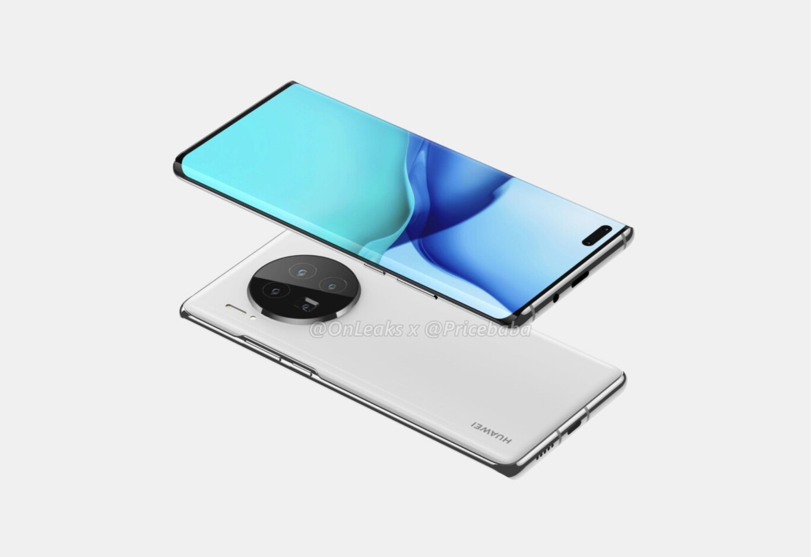
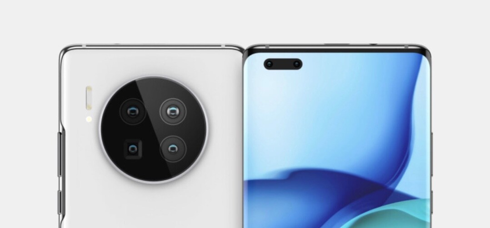

El Huawei Mate 40 llegará el próximo 22 de octubre: el último con procesador Kirin
Huawei ha anunciado la fecha de presentación de su siguiente gran móvil, el Huawei Mate 40. O más bien en plural, pues se espera que sean varios los que compongan esta serie. Aparte de las características que puedan traer o no, estos móviles van a ser especiales por una razón extra: serán los últimos (al menos por un tiempo) en traer el chip Kirin de diseño propio de Huawei.
Según ha anunciado Huawei Mobile, el próximo 22 de octubre a las 14:00 CEST los Mate 40 Series serán presentados oficialmente. Estos teléfonos llegan como la segunda tanda de grandes lanzamientos de Huawei este año, después de que viésemos los Huawei P40 y Huawei P40 Pro.
Unprecedented Power is coming.
— Huawei Mobile (@HuaweiMobile) October 10, 2020
Don’t miss the announcement on 22.10.20 #LeapFurtherAhead #HUAWEIMate40 pic.twitter.com/Be5u0AY4fj
Como ya ocurrió con los Mate 30, estos nuevos Huawei Mate 40 seguramente se centren en el apartado fotográfico como mejora respecto a los modelos P40. Algunas filtraciones desvelan una gigantesca cámara trasera con cuatro lentes. También s apuesta por el agujero en la pantalla en lugar de un notch. Siguiendo con la pantalla, vemos que tendrá laterales curvados.
Los últimos Kirin y sin Google
Como ya vimos en agosto de este año, Huawei se vio obligada a dejar de fabricar su procesador de diseño propio Kirin que llevan actualmente sus smartphones de gama alta. Esto se debe a las sanciones de Estados Unidos y vetos a que otras empresas colaboren con Huawei por estar en su lista negra. En consecuencia TSMC ya no puede fabricar procesadores Kirin desde el pasado 15 de septiembre. Esto ha hecho que los Huawei Mate 40 Series vayan a ser los últimos en montar el procesador de la marca.
Como es de esperar, los Huawei Mate 40 Series vendrán también sin los servicios de Google. Ya hemos probado y visto cómo es usar un móvil de gama alta de Huawei sin Google. Aunque hay esperanzas para Huawei aún, otros fabricantes como Intel ya tienen licencia para poder colaborar con Huawei. Se espera que la próxima sea Qualcomm y en consecuencia tengamos procesadores Snapdragon en los futuros Huawei.
El próximo 22 de octubre se despejarán muchas dudas e incógnitas sobre estos nuevos teléfonos de gama alta de Huawei. Estaremos atentos.